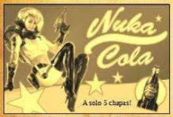
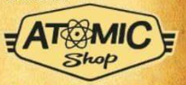
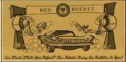
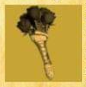

Llega el parche de inventario

Este nuevo parche llega a Fallout 76 para ayudar
a organizar mejor nuestro inventario entre otras cosas.
A continuación las novedades mas importantes:
Aumento del alijo, de 800 a 1200.
Nuevas pestañas en el Pip-Boy, ahora armaduras y
atuendos están por separado y comida y bebida están
separadas de ayuda, lo cual agilizará mucho la búsqueda
de nuestros objetos. También se incorpora la pestaña
"nuevo" donde encontraremos los últimos items recogidos
en la sesión actual ordenados en el orden en el que se recogen.
Nueva función "peso apilado" nos muestra la el peso total de
un item que tengamos en cantidad (Tip: atentos con los items de
ayuda y comida y bebida, que suelen ser los que mas se acumulan sin
darse cuenta!).

También encontraremos mejoras en la interfaz de la vista en mapa de las maquinas vendedoras de jugadores. Ahora aparecen diferenciadas ammas y armaduras por cantidad de estrellas legendarias, lo cual sin duda nos ahorrará muchos viajes rápidos.
 Operaciones Diarias
Operaciones Diarias
A partir de esta actualización al completar una operación diaria alcanzando el rango de "Maestre" se garantizará la obtención de al menos un objeto de entre las recompensas poco comunes.
Conocimiento Prohibido
La conocida misión secundaria ha sido reactivada luego de haber solucionado los problemas con los datos técnicos. Y ahora no solo pueden depositarse en Campamento Aventura, también son recibidos en Fuerte Atlas por la escriba Odessa Valdez de la Hermandad del Acero, a quien vemos en la siguiente imagen.

Consejo diario: no olvides llevar siempre un poco de Rad-X por si te topas con una tormenta radiactiva ;-)
En la tienda atómica se ha añadido una opción para que muestre solo los items que no hemos comprado, para facilitar la navegación y mejorar la visualización.
Esta semana encontraremos las siguientes novedades: Cámara de Habitaciones de Refugio 1500 átomos Conjunto de sofas modulares 500 átomos Servoarmadura de Ranger del Parque 1200 átomos Además de muchas ofertas entre las que destacan los letreros de Quantum, Old Possum y Pickaxe, Conjunto de bar elegante, Conjunto de barra de Slocum's Joe, entre otras.
 Evento por tiempo limitado No olvides reclamar la skin gratuita del "Rompecorazones" para la Llave Grifa y participar del evento "Muero de Amor", donde deberás completar desafios diarios y semanales que otorgarán recompensas como tarteras, kits de reparación, sobres de "perks", y objetos de tiempo limitado (atuendo de RobCo, Bungaló rústico y Casco de pescador de langostas).